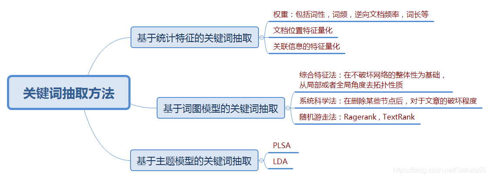
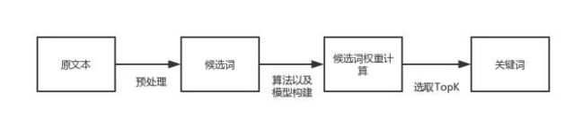

关键词提取
关键词是能够表达文档中心内容的词语，常用于计算机系统标引论文内容特征、信息检索、系统汇集以供读者检阅。关键词提取是文本挖掘领域的一个分支，是文本检索、文本比较、摘要生成、文档分类和聚类等文本挖掘研究的基础性工作。
从算法角度，关键词提取算法主要有两类：无监督关键词提取算法和有监督关键词提取算法。
- 无监督关键词提取算法
不需要人工标注的语料，利用某些方法发现文本中比较重要的词作为关键词，进行关键词提取。该方法是先抽取出候选词，然后对每个候选词进行打分，输出topK个分值最高的候选词作为关键词。根据打分的策略不同，有不同的算法，如TF-IDF、TextRank、LDA等算法。
无监督关键词提取方法主要有三类：基于统计特征的关键词提取（TF-IDF）；基于词图模型的关键词提取（PageRank，TextRank）；基于主题模型的关键词提取（LDA）。

- 基于统计特征的关键词提取算法思想是利用文档中词语的统计信息抽取文档的关键词；
- 基于词图模型的关键词提取首先要构建文档的语言网络图，然后对语言进行网络图分析，在这个图上寻找具有重要作用的词或者短语，这些短语就是文档的关键词；
- 基于主题关键词提取算法主要利用的是主题模型中关于主题分布的性质进行关键词提取；
- 有监督关键词提取算法
将关键词抽取过程视为二分类问题，先提取出候选词，然后对于每个候选词划定标签，要么是关键词，要么不是关键词，然后训练关键词抽取分类器。当新来一篇文档时，提取出所有的候选词，然后利用训练好的关键词提取分类器，对各个候选词进行分类，最终将标签为关键词的候选词作为关键词。

两种算法优缺点
无监督方法不需要人工标注训练集合的过程，因此更加快捷，但由于无法有效综合利用多信息对候选关键词排序，所以效果无法与有监督方法媲美；而有监督方法可以通过训练学习调节多种信息对于判断关键词的影响程度，因此效果更优，有监督的文本关键词提取算法需要高昂的人工成本（标注），因此现有的文本关键词提取主要采用适用性较强的无监督关键词提取。关键词提取工具/sdk
- jieba
- Textrank4zh（TextRank算法工具）
- SnowNLP（中文分析，简体中文文本处理）
- TextBlob（英文分析）
TF-IDF关键词提取算法实现
TF-IDF算法的详细介绍及实现方法：算法实现
TextRank关键词提取算法实现
TextRank算法的详细介绍及实现方法：算法实现
LDA主题模型关键词提取算法实现
- LDA（Latent Dirichlet Allocation）文档主题生成模型
主题模型是一种统计模型，用于发现文档集合中出现的抽象“主题”。主题建模是一种常用的文本挖掘工具，用于在文本体中发现隐藏的语义结构。
LDA也称三层贝叶斯概率模型，包含词、主题、文档三层结构；利用文档中单词的共现关系来对单词按主题聚类，得到“文档-主题”和“主题-单词”2个概率分布。
详细可以参考LDA通俗理解
- 基于LDA主题模型的关键词提取算法实现
from gensim import corpora, models
import jieba.posseg as jp
import jieba
# 简单文本处理
def get_text(text):
flags = ('n', 'nr', 'ns', 'nt', 'eng', 'v', 'd') # 词性
stopwords = ('的', '就', '是', '用', '还', '在', '上', '作为') # 停用词
words_list = []
for text in texts:
words = [w.word for w in jp.cut(text) if w.flag in flags and w.word not in stopwords]
words_list.append(words)
return words_list
# 生成LDA模型
def LDA_model(words_list):
# 构造词典
# Dictionary()方法遍历所有的文本，为每个不重复的单词分配一个单独的整数ID，同时收集该单词出现次数以及相关的统计信息
dictionary = corpora.Dictionary(words_list)
print(dictionary)
print('打印查看每个单词的id:')
print(dictionary.token2id) # 打印查看每个单词的id
# 将dictionary转化为一个词袋
# doc2bow()方法将dictionary转化为一个词袋。得到的结果corpus是一个向量的列表，向量的个数就是文档数。
# 在每个文档向量中都包含一系列元组,元组的形式是（单词 ID，词频）
corpus = [dictionary.doc2bow(words) for words in words_list]
print('输出每个文档的向量:')
print(corpus) # 输出每个文档的向量
# LDA主题模型
# num_topics -- 必须，要生成的主题个数。
# id2word -- 必须，LdaModel类要求我们之前的dictionary把id都映射成为字符串。
# passes -- 可选，模型遍历语料库的次数。遍历的次数越多，模型越精确。但是对于非常大的语料库，遍历太多次会花费很长的时间。
lda_model = models.ldamodel.LdaModel(corpus=corpus, num_topics=2, id2word=dictionary, passes=10)
return lda_model
if __name__ == "__main__":
texts = ['作为千元机中为数不多拥有真全面屏的手机，OPPO K3一经推出，就簇拥不少粉丝', \
'很多人在冲着这块屏幕购买了OPPO K3之后，发现原来K3的过人之处不止是在屏幕上', \
'OPPO K3的消费者对这部手机总体还是十分满意的', \
'吉利博越PRO在7月3日全新吉客智能生态系统GKUI19发布会上正式亮相', \
'今年上海车展，长安CS75 PLUS首次亮相', \
'普通版车型采用的是双边共双出式排气布局；运动版本车型采用双边共四出的排气布局']
# 获取分词后的文本列表
words_list = get_text(texts)
print('分词后的文本：')
print(words_list)
# 获取训练后的LDA模型
lda_model = LDA_model(words_list)
# 可以用 print_topic 和 print_topics 方法来查看主题
# 打印所有主题，每个主题显示5个词
topic_words = lda_model.print_topics(num_topics=2, num_words=5)
print('打印所有主题，每个主题显示5个词:')
print(topic_words)
# 输出该主题的的词及其词的权重
words_list = lda_model.show_topic(0, 5)
print('输出该主题的的词及其词的权重:')
print(words_list)可在本机python环境中运行并查看结果。
Word2Vec词聚类关键词提取算法实现
Word2Vec词向量表示
利用浅层神经网络模型自动学习词语在语料库中的出现情况，把词语嵌入到一个高维的空间中，通常在100-500维，在高维空间中词语被表示为词向量的形式。
特征词向量的抽取是基于已经训练好的词向量模型。K-means聚类算法
聚类算法旨在数据中发现数据对象之间的关系，将数据进行分组，使得组内的相似性尽可能的大，组间的相似性尽可能的小。
算法思想是：首先随机选择K个点作为初始质心，K为用户指定的所期望的簇的个数，通过计算每个点到各个质心的距离，将每个点指派到最近的质心形成K个簇，然后根据指派到簇的点重新计算每个簇的质心，重复指派和更新质心的操作，直到簇不发生变化或达到最大的迭代次数则停止。
- 基于Word2Vec词聚类关键词提取方法的实现过程
主要思路是对于用词向量表示的词语，通过K-means算法对文章中的词进行聚类，选择聚类中心作为文本的一个主要关键词，计算其他词与聚类中心的距离即相似度，选择topK个距离聚类中心最近的词作为关键词，而这个词间相似度可用Word2Vec生成的向量计算得到。
具体步骤如下：
- 对语料进行Word2Vec模型训练，得到词向量文件；
- 对文本进行预处理获得N个候选关键词；
- 遍历候选关键词，从词向量文件中提取候选关键词的词向量表示；
- 对候选关键词进行K-means聚类，得到各个类别的聚类中心（需要人为给定聚类的个数）；
- 计算各类别下，组内词语与聚类中心的距离（欧几里得距离或曼哈顿距离），按聚类大小进行降序排序；
- 对候选关键词计算结果得到排名前TopK个词语作为文本关键词。
注：第三方工具包Scikit-learn提供了K-means聚类算法的相关函数，本文用到了sklearn.cluster.KMeans()函数执行K-means算法，sklearn.decomposition.PCA()函数用于数据降维以便绘制图形。
信息增益关键词提取算法实现
信息增益算法的详细介绍及实现方法：算法实现
互信息关键词提取算法实现
互信息（Mutual Information，MI）
在概率论和信息论中，两个随机变量的互信息或转移信息（transinformation）是变量间相互依赖性的量度。不同于相关系数，互信息并不局限于实值随机变量，它更加一般且决定着联合分布 $p(X,Y)$ 和分解的边缘分布的乘积 $p(X)p(Y)$ 的相似程度。互信息是度量两个事件集合之间的相关性（mutual dependence）。
互信息被广泛用于度量一些语言现象的相关性。在信息论中，互信息被用于衡量两个词的相关度，也用来计算词与类别之间的相关性。互信息计算公式
其中 $p(X,Y)$ 是X和Y的联合概率分布函数，而p(X)和p(Y)分别是X和Y的边缘概率分布函数。
$$
I(X; Y) = \sum_{y\in Y}\sum_{x\in X}p(x, y) \log(\frac{p(x,y)}{p(x)p(y)})
$$
$$
\begin{aligned}
I(X; Y) &= \sum_{x,y}p(x, y) \log{\frac{p(x, y)}{p(x)p(y)}}\\
&= \sum_{x,y}p(x, y) \log{\frac{p(x, y)}{p(x)}} - \sum_{x,y}p(x, y) \log p(y)\\
&= \sum_{x,y}p(x)p(y|x) \log(py|x) - \sum_{x,y}p(x, y) \log{p(y)}\\
&= \sum_xp(x)(\sum_yp(y|x) \log{p(y|x)}) - \sum_y \log{p(y)}(\sum_xp(x,y))\\
&= -\sum_xp(x)H(Y|X=x) - \sum_y \log{p(y)p(y)}\\
&= -H(Y|X) + H(Y)\\
&= H(Y) - H(Y|X)
\end{aligned}
$$
- 互信息算法实现
from sklearn import metrics
import numpy as np
# 训练集和训练标签
x_train = [[1, 2, 3, 4, 5],
[5, 4, 3, 2, 1],
[3, 3, 3, 3, 3],
[1, 1, 1, 1, 1]]
y_train = [0, 1, 0, 1]
# 测试集和测试标签
x_test = [[2, 2, 2, 2, 2], [2, 1, 1, 2, 1]]
x_train = np.array(x_train) # 转为array
# 存储每个特征与标签相关性得分
features_score_list = []
for i in range(len(x_train[0])):
# 计算每个特征与标签的互信息
feature_info = metrics.mutual_info_score(y_train, x_train[:, i])
features_score_list.append(feature_info)
print(features_score_list)请在本机查看运行结果。
- 信息论中的互信息和决策树中的信息增益的关系
$$
\begin{aligned}
& 信息论中互信息：\\
& I(X;Y) = H(X) - H(X|Y)\\
& 决策树中信息增益：\\
& G(D,A) = H(D) - H(D|A)
\end{aligned}
$$
两者表达意思是一样的，都是表示得知特征X的信息而使得类Y的信息的不确定性减少的程度。
注：
- 标准化互信息（Normalized Mutual Information，NMI）可以用来衡量两种聚类结果的相似度。
- 标准化互信息Sklearn实现：metrics.normalized_mutual_info_score(y_train, x_train[:,i])。
- 点互信息（Pointwise Mutual Information，PMI）这个指标来衡量两个事物之间的相关性（比如两个词）。
卡方检验关键词提取算法实现
卡方检验
卡方是数理统计中用于检验两个变量独立性的方法，是一种确定两个分类变量之间是否存在相关性的统计方法，经典的卡方检验师检验定性自变量对定性因变量的相关性。基本思路
- 原假设：两个变量是独立的
- 计算实际观察值和理论值之间的偏离程度
- 如果偏差足够小，小于设定阈值，就接受原假设；否则就否定原假设，认为两变量是相关的。
- 计算公式
$$
x^2 = \sum \frac{(A-T)^2}{T}
$$
其中，A为实际值，T为理论值。卡方检验可用于文本分类问题中的特征选择，此时不需要设定阈值，只关心找到最为相关的topK个特征。基本思想：比较理论频数和实际频数的吻合程度或者拟合优度问题。
- 基于sklearn的卡方检验实现
from sklearn.feature_selection import SelectKBest
from sklearn.feature_selection import chi2
# 训练集和训练标签
x_train = [[1, 2, 3, 4, 5],
[5, 4, 3, 2, 1],
[3, 3, 3, 3, 3],
[1, 1, 1, 1, 1]]
y_train = [0, 1, 0, 1]
# 测试集和测试标签
x_test = [[2, 2, 2, 2, 2], [2, 1, 1, 2, 1]]
y_test = [1, 1]
# 卡方检验选择特征
chi2_model = SelectKBest(chi2, k=3) # 选择k个最佳特征
# 该函数选择训练集里的k个特征，并将训练集转化所选特征
x_train_chi2 = chi2_model.fit_transform(x_train, y_train)
# 将测试集转化为所选特征
x_test_chi2 = chi2_model.transform(x_test)
print('各个特征的得分：', chi2_model.scores_)
print('各个特征的p值：', chi2_model.pvalues_) # p值越小，置信度越高，得分越高
print('所选特征的索引：', chi2_model.get_support(True))
print('特征提取转换后的训练集和测试集...')
print('x_train_chi2:', x_train_chi2)
print('x_test_chi2:', x_test_chi2)请在本机查看运行结果。
基于树模型关键词提取算法实现
- 树模型
主要包括决策树和随机森林，基于树的预测模型（sklearn.tree模块和sklearn.ensemble模块）能够用来计算特征的重要程度，因此能用来去除不相关的特征（结合sklearn.feature_selection.SelectFromModel）
sklearn.ensemble模块包含了两种基于随机决策树的平均算法：RandomForest算法和Extra-Trees算法。这两种算法都采用了很流行的树设计思想：perturb-and-combine思想。这种方法会在分类器的构建时，通过引入随机化，创建一组各不一样的分类器。这种ensemble方法的预测会给出各个分类器预测的平均。
RandomForests在随机森林(RF)中，该ensemble方法中的每棵树都基于一个通过可放回抽样(boostrap)得到的训练集构建。相反的，在features的子集中随机进行split反倒是最好的split方式。sklearn的随机森林(RF)实现通过对各分类结果预测求平均得到，而非让每个分类器进行投票（vote）。
Ext-Trees在Ext-Trees中（详见ExtraTreesClassifier和ExtraTreesRegressor），该方法中，随机性在划分时会更进一步进行计算。在随机森林中，会使用候选feature的一个随机子集，而非查找最好的阈值，对于每个候选feature来说，阈值是抽取的，选择这种随机生成阈值的方式作为划分原则。
- 树模型的关键词提取算法实现
- 部分代码实现
from sklearn.tree import DecisionTreeClassifier
from sklearn.ensemble import RandomForestClassifier
from sklearn.ensemble import ExtraTreesClassifier
from sklearn.feature_selection import SelectFromModel
# 导入SelectFromModel结合ExtraTreesClassifier计算特征重要性，并按重要性阈值选择特征。
# 基于树模型进行模型选择
clf_model = ExtraTreesClassifier(n_estimators=250, random_state=0)
clf_model.fit(x_train, y_train)
# 获取每个词的特征权重,数值越高特征越重要
importances = clf_model.feature_importances_
# 选择特征重要性为1.5倍均值的特征
model = SelectFromModel(clf_model, threshold='1.5*mean', prefit=True)
x_train_new = model.transform(x_train) # 返回训练集所选特征
x_test_new = model.transform(x_test) # 返回测试集所选特征- 部分代码实现
# 训练集和训练标签
x_train, y_train
# 候选特征词列表
words_list
# 基于树模型进行模型选择
forest = RandomForestClassifier(n_estimators=250, random_state=0)
forest.fit(x_train, y_train)
importances = forest.feature_importances_ # 获取每个词的特征权重
# 将词和词的权重存入字典
feature_words_dic = {}
for i in range(len(words_list)):
feature_words_dic[words_list[i]] = importances[i]
# 对字典按权重由大到小进行排序
words_info_dic_sort = sorted(words_info_dic.items(), key=lambda x: x[1], reverse=True)
# 将关键词和词的权重分别存入列表
keywords_list = [] # 关键词列表
features_list = [] # 关键权重列表
for word in words_info_dic_sort:
keywords_list.append(word[0])
features_list.append(word[1])
# 选取前一千个关键词和权重写入文本文件
keywords = keywords_list[:1000]
features = features_list[:1000]
# 将含有关键字的文本写入文件
with open('data/keywords_features.txt', 'a', encoding="utf-8") as f:
for i in range(len(keywords)):
f.write(keywords[i] + '\t' + features[i] + '\n')总结
本文总结了本人在实验过程中所用到的常用关键词抽取方法，实验数据是基于公司的内部数据，但此篇总结只是方法上的讲解和实现，没有针对某一具体数据集做相应的结果分析。从实验中可以很明显看出有监督关键词抽取方法通常会显著好于无监督方法，但是有监督方法依赖一定规模的标注数据。